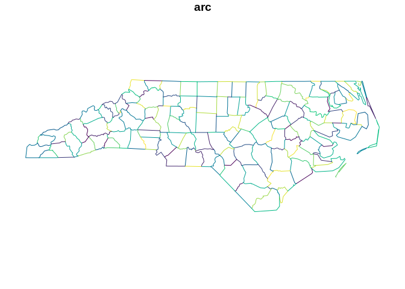
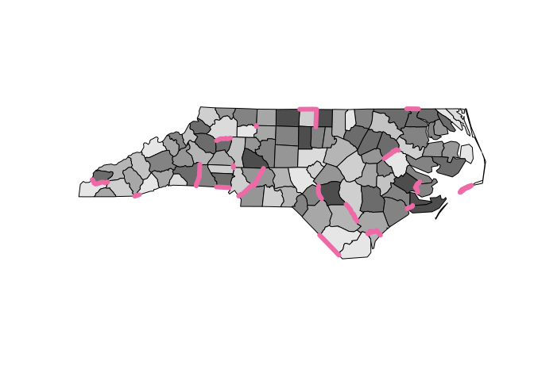

The goal of sfarc.node is to extract unique shared boundaries (arcs) from sf polygons as sf lines.
Installation
You can install the dev version of sfarc.node from Github with:
remotes::install_github("mdsumner/sfarc.node")
Example
This shows examples of getting these shared boundaries. The feature id/s (the row number/s) from which each boundary came are listed in a list column, so that we can look up the original polygon/s for each arc. (There should be 1, or possibly 2 but results may vary wildly with unclean data).
library(sfarc.node) f <- system.file("gpkg/nc.gpkg", package = "sf", mustWork = TRUE) sfx <- sf::read_sf(f) arcs <- sf_arcnode(sfx) plot(arcs["arc"], col = sample(hcl.colors(nrow(arcs))))

We can get the original polygon id/s for a given boundary.
s <- sample(seq_len(dim(arcs)[1L]), 1L) plot(sfx[arcs$feature_ids[[s]]$row, "geom"], reset = FALSE, col = c("grey", "grey10")) plot(arcs[s, 1], add = TRUE, col = "hotpink2", lwd = 6)

plot(sfx$geom, col = sample(grey.colors(10), 100, replace = TRUE), reset = FALSE) plot(dplyr::sample_n(arcs[1], 20), col = "hotpink2", lwd = 6, add = TRUE)

Works fine with more hardcore data.
arx <- sf_arcnode(silicate::inlandwaters) idx <- which(unlist(lapply(arx$feature_ids, function(.x) length(.x$row) > 1))) s <- idx[7] plot(silicate::inlandwaters[arx$feature_ids[[s]]$row, "geom"], reset = FALSE, col = c("grey", "grey10")) plot(arx[s, 1], add = TRUE, col = "hotpink2", lwd = 4)
s <- idx[3] plot(silicate::inlandwaters[arx$feature_ids[[s]]$row, "geom"], reset = FALSE, col = c("grey", "grey10")) plot(arx[s, 1], add = TRUE, col = "hotpink2", lwd = 4)
Code of Conduct
Please note that the sfarc.node project is released with a Contributor Code of Conduct. By contributing to this project, you agree to abide by its terms.